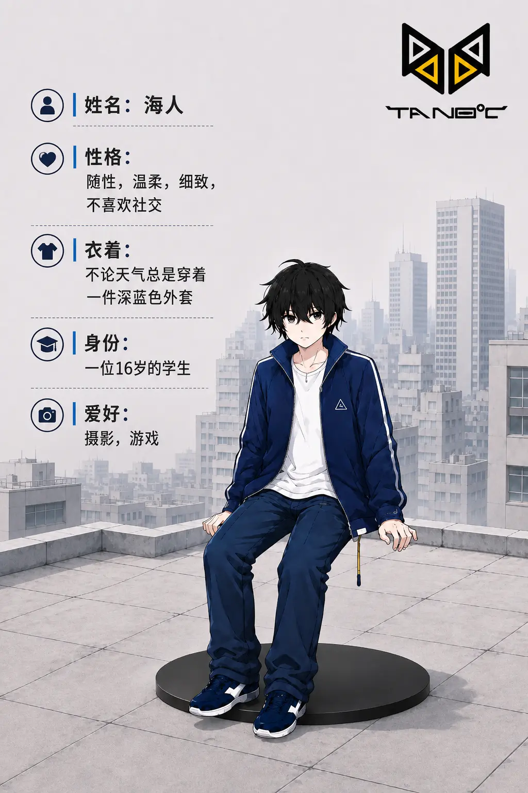
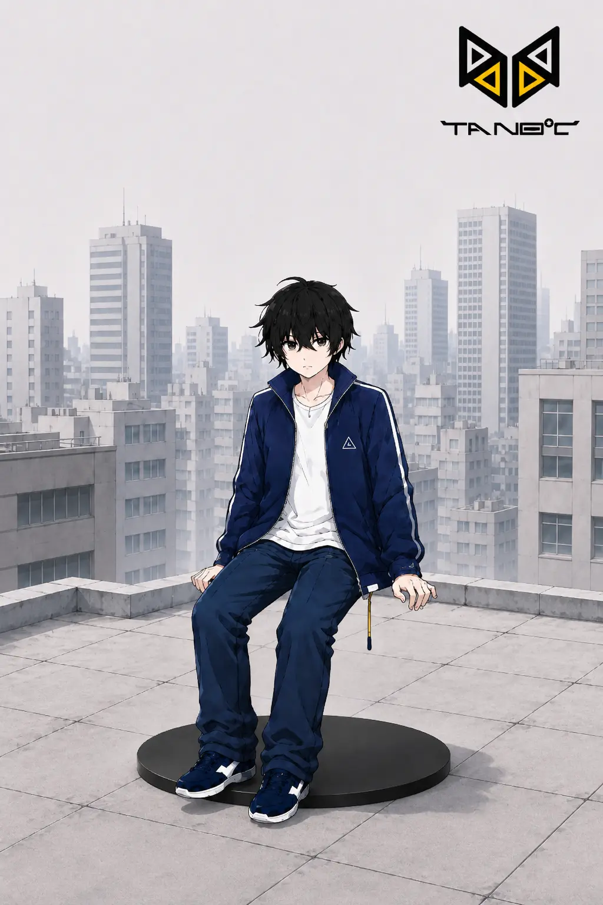
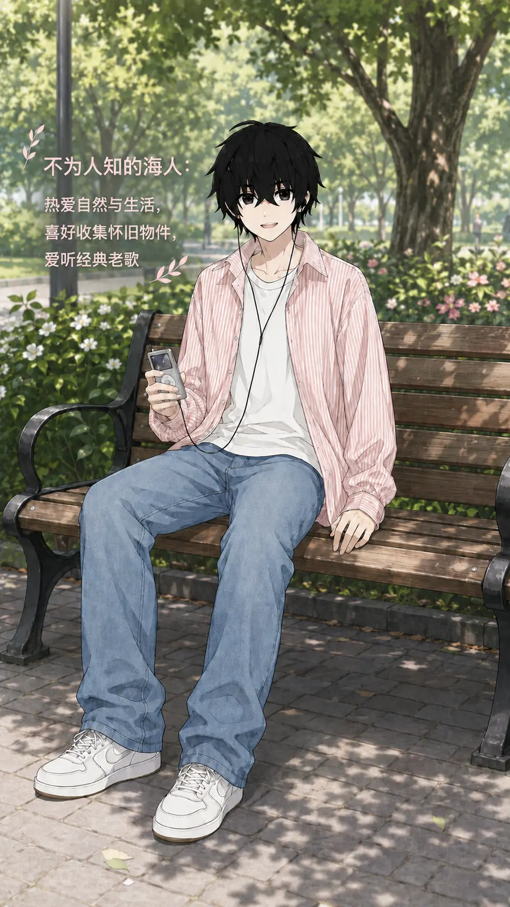
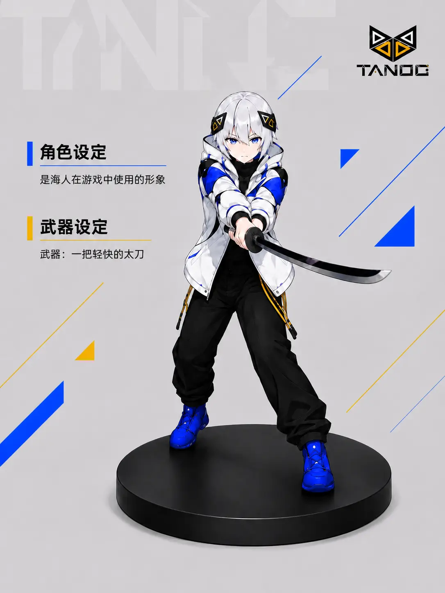
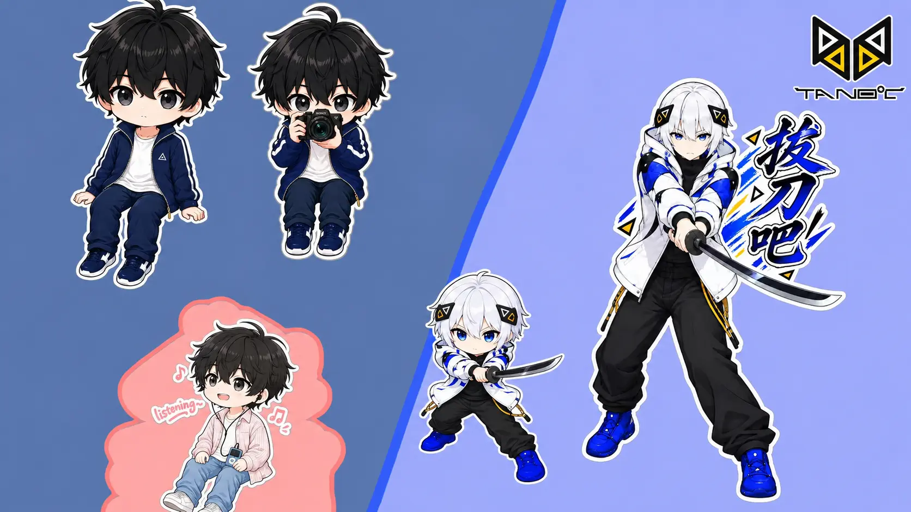
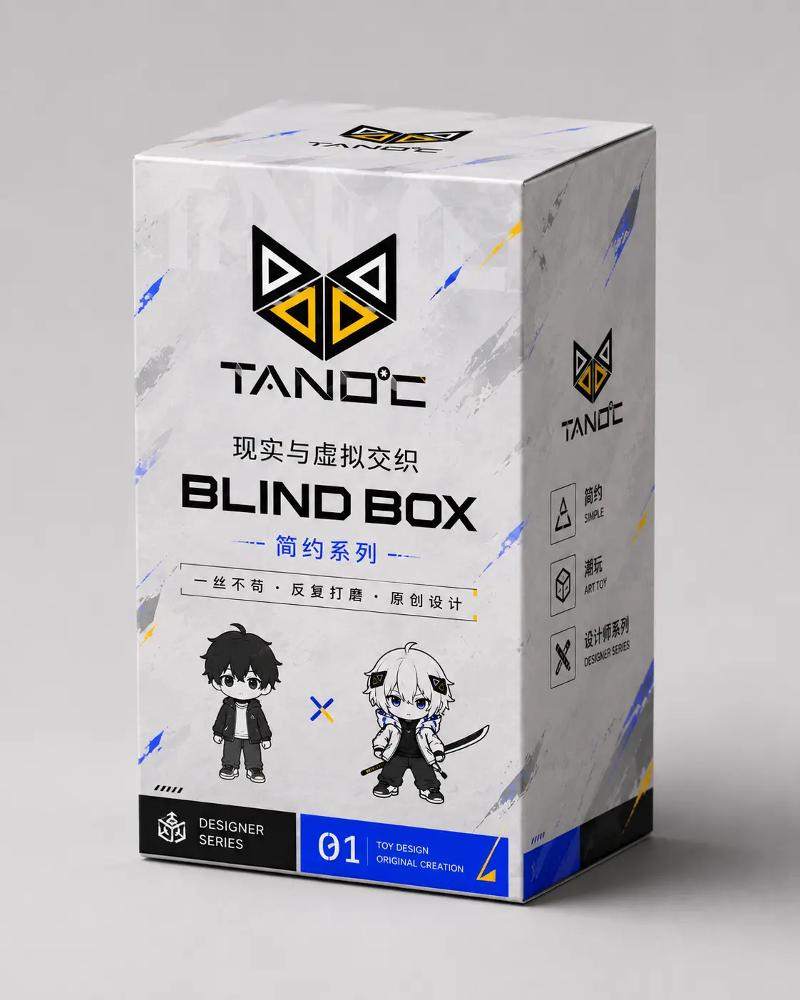
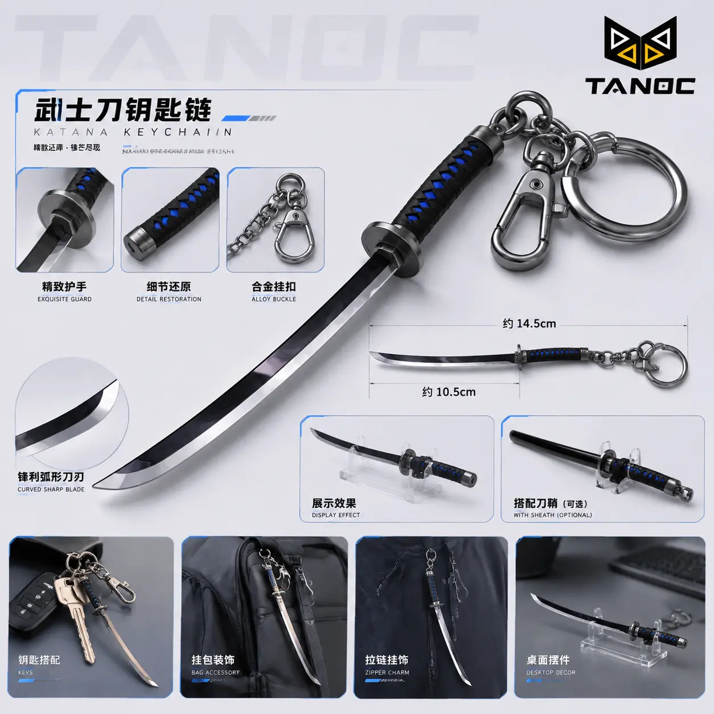
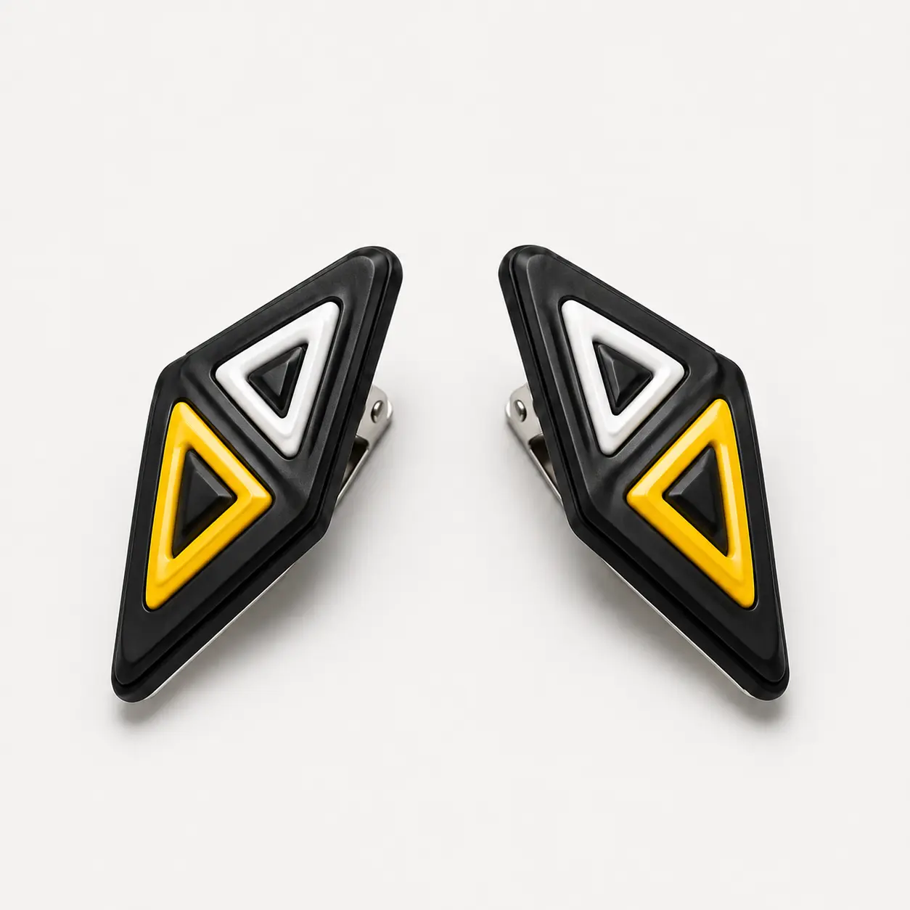
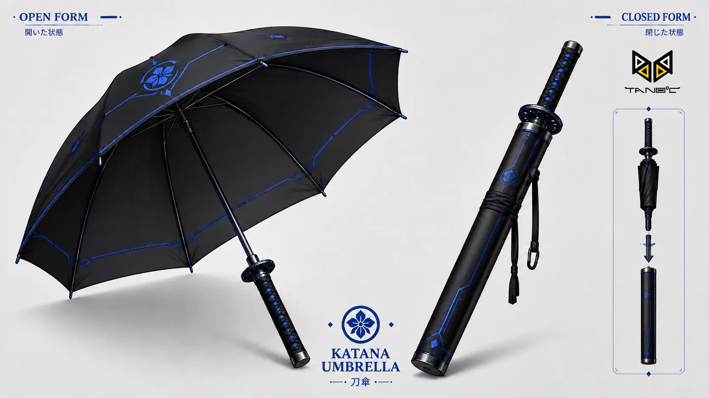

CHARACTER STORY
一个人在两种世界里的样子
海人是一位16岁的学生。现实中的他随性、温柔、细致，不喜欢社交，总是穿着一件深蓝色外套，喜欢摄影和游戏。
少有人知道，他同样热爱自然与生活，喜欢收集怀旧物件，也爱听经典老歌。进入游戏后，海人使用白发、蓝眼、身穿蓝白外套的形象，武器是一把轻快的太刀。
“现实与虚拟交织”

IDENTITY FILES



NAME
REAL / VIRTUAL
CHARACTER STORY
海人是一位16岁的学生。现实中的他随性、温柔、细致，不喜欢社交，总是穿着一件深蓝色外套，喜欢摄影和游戏。
少有人知道，他同样热爱自然与生活，喜欢收集怀旧物件，也爱听经典老歌。进入游戏后，海人使用白发、蓝眼、身穿蓝白外套的形象，武器是一把轻快的太刀。
“现实与虚拟交织”
FIGURE GALLERY
每张图片均完整显示；第1张同时作为Banner视频加载失败时的备用画面。
STICKERS & MERCH





PRESALE EXPERIENCE
以“现实 × 虚拟”为视觉线索，汇集海人在现实、游戏与Q版形态中的不同呈现。
DESIGNER'S NOTE
我希望每个人看到我的作品都可以感到愉快，哪怕只有一丝；同时我也深爱着我所创作的作品，所以我才会一丝不苟地一次次改进，坚持我的简约化，使角色更加鲜活且真实。最后请支持我吧。
STANDALONE LOGO